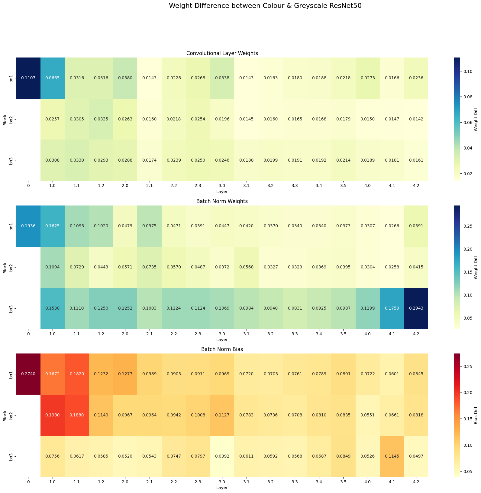
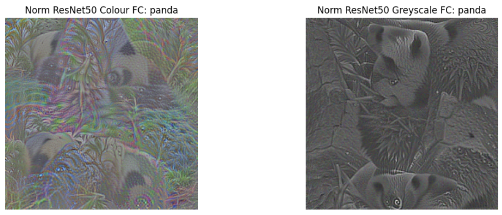
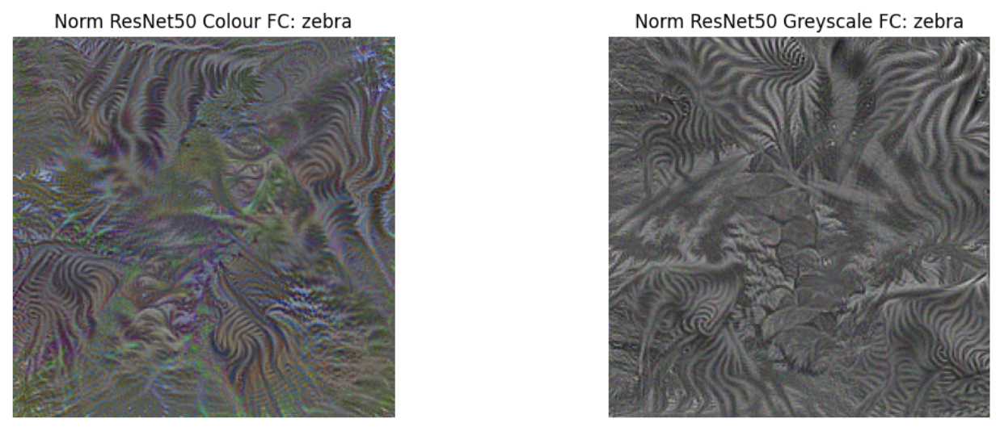
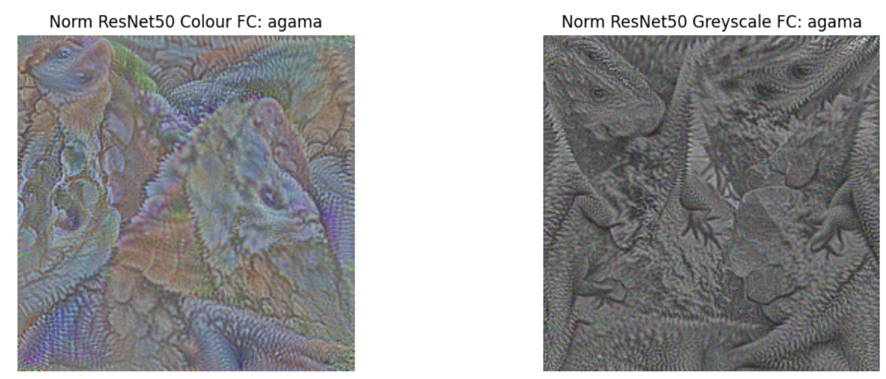
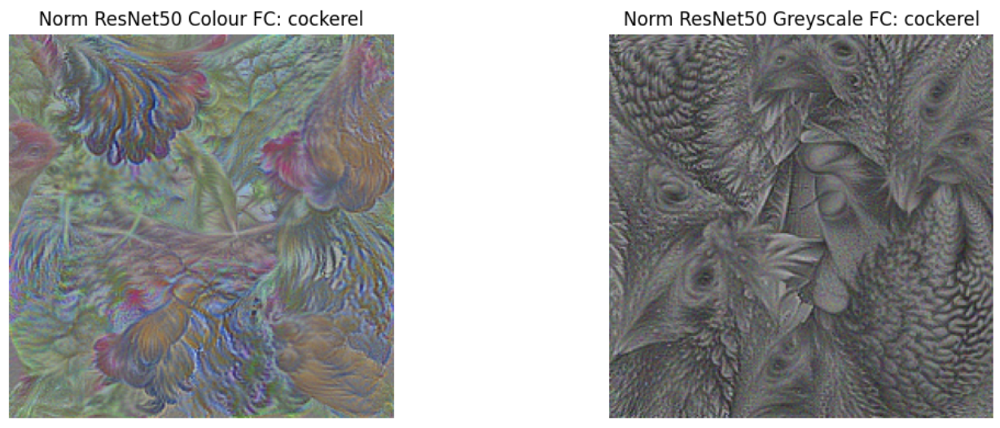
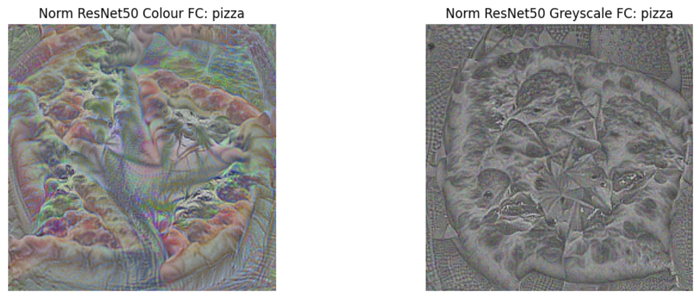

Transfer learning has become the de facto approach to neural network training, especially when data availability is low, and there is extensive evidence in the literature to support its efficacy. However, when transferring to unique domains, such as medical imagery, the relevance of generic pre-trained weights is dubious. Recent analyses of COVID-19 CXR classifiers revealed their high-performance accuracy was often attributed to "shortcut learning" - reliant on spurious correlations in the data. In this work, we question whether better features can be obtained by better aligning the pre-training data with our target. Specifically, we focus on the challenge of learning disease from chest X-rays, a medium which does not contain colour features, and pathology tends to be indicated by variations in texture and intensity. Does removing colour as a learnable feature free up space in the network to learn more texture features? Does less neuron death occur when transfer learning from greyscale weights rather than colour weights? Do the fundamental building blocks of the network differ when colour is removed? Can the network learn a more robust representation from different weights? We explore these questions and aim to determine whether greyscale pre-training can significantly improve the capability of deep neural networks for medical imagery.
Transfer learning, where a deep learning model is first trained on a vast dataset to learn fundamental tasks and then partially frozen and fine-tuned on a target dataset, has become the standard approach in many neural network training tasks. This is particularly useful when data availability is low, as the pre-trained model can leverage prior knowledge to improve performance. There is extensive evidence in the literature supporting the efficacy of this technique, particularly in overcoming data scarcity.
However, when applied to specialised domains like medical imaging, the relevance of generic pre-trained weights becomes questionable. Existing models, often pre-trained on RGB datasets like ImageNet, have been shown to perform poorly when transferred to medical image classification tasks. This misalignment raises concerns about reliability, with models often overfitting on limited training data, relying on spurious correlations, and showing a high risk of bias—rendering them unsuitable for clinical use.
In this study, we seek to improve the reliability of medical image classifiers by using pre-trained weights that are more closely aligned with the grayscale nature of medical imagery. Additionally, we explore interpretative methods to compare the network weights and gain insight into how different representations impact model performance. We hypothesise that the performance gains typically seen with RGB-based ImageNet weights do not transfer effectively to grayscale medical images due to significant differences in feature representations and the loss of colour features, which can lead to extensive neuron death.
For this study, we used the official PyTorch recipe to pre-train the greyscale ResNet50 model. ResNet50 was chosen due to its widespread use in medical image literature, where it has consistently demonstrated good performance. To create the greyscaled ImageNet-1K dataset, we modified the data loader to include a greyscale transformation before applying all other image transforms. Importantly, we preserved the three-channel structure in the greyscale images to ensure that the resulting models (colour and greyscale) were maximally comparable.
Model Pre-training and Fine-tuning
ResNet50 models were pre-trained using the greyscaled ImageNet-1K dataset. Due to computational constraints, only the greyscale network was pre-trained from scratch, while the official pre-trained colour ImageNet-1K weights were used for comparison. The training recipe used for the greyscale model was identical to that used for the official PyTorch ImageNet-1K weights.
Control Experiment for Statistical Significance
To account for possible differences in hardware or environment between the colour and greyscale models, we conducted a control experiment using CIFAR datasets. In this toy experiment, both greyscale and colour models were trained using the same setup, and weight differences between the two were compared using the Kolmogorov-Smirnov test. The results showed statistically significant differences between the distributions of the colour and greyscale models, indicating that the fundamental differences observed are due to the colour of the weights, not environmental factors. The Kruskal-Wallis test further confirmed that intra-group differences (within the colour or greyscale models) were not statistically significant, while inter-group differences (between the colour and greyscale models) were statistically significant.
Weight and Feature Analysis
To further investigate differences between the colour and greyscale networks, we generated heatmaps visualising the differences in weights across the entire network. Three separate heatmaps were created to show differences in:
Convolutional layer weights.
Batch normalisation weights.
Batch normalisation biases.
These heatmaps provided a layer-by-layer comparison, allowing us to pinpoint where the most significant differences occurred between the models.
We also performed a visual analysis of the input filters of each model to determine if the fundamental building blocks of the network differed. Each ResNet50 model contains 64 filters in the first layer, with dimensions of 7x7x3. We visualised these filters to compare their structure and found that colour and greyscale models differed in their initial feature extraction.
Class Activation and Representation Analysis
Finally, we visualised the final layer outputs of the ImageNet models for various classes, using a method from Chris Olah et al., which generates outputs that maximise target neuron activations. This allowed us to observe visual differences in how the two models represented various ImageNet classes. Additionally, we calculated the mean layer activations to compare representational differences over the layers of each network, providing further insights into the depth of feature extraction differences.
While evaluations of the networks after fine-tuning will provide clear, quantitative results to determine the impact on classification performance, we want to deeply understand the underlying behaviour of the model and develop intuition as to why it works or does not. We believe this is an essential step in developing reliable and trustworthy AI systems. As such, in this article, we spend extensive time analysing the characteristics of the two pre-trained networks below.
To determine whether the fundamental building blocks of the two ImageNet networks differ, we visualised the first layer filters, as performed by Krizhevsky et al. (2012).
Input filters for the Greyscale (top) and Colour (bottom) ImageNet ResNet50 networks. Each set contains 64 filters of size 7x7x3.
The most immediate and visible difference between the first-layer filters of the RGB and greyscale pre-trained networks is the presence of colour in the RGB filters. In contrast, the greyscale network filters are entirely devoid of colour, as expected. However, surprisingly, over a quarter of the 64 greyscale filters are empty. In this state, it is unclear whether the filters between the networks are the same, with the colour features from the RGB model resulting in empty channels in the greyscale model, or whether the greyscale network managed to learn new filters in place of the colour filters.
To better understand the differences in filters between the networks, we attempted to pair up matching filters between the networks.
Manually mapped ImageNet filters between the Greyscale (blue box) and Colour (orange box) networks.
When comparing the filters between the two networks, most could be mapped to each other, with the RGB network containing repeated filters in different colours. This suggests that the colour model captures multiple redundant representations of the same pattern in different colour variations. However, not all filters can be mapped between the networks. Nine of the 46 non-empty greyscale model filters were unique from the colour network filters. The colour model, which has 62 non-empty filters, contains eleven filters not found in the greyscale network. However, several filters are representations of the same pattern, just in different colour variations. This behaviour is observed throughout the colour network filters.
These visual differences in the first-layer filters suggest that the initial building blocks passed into the network differ significantly, even though both models were trained on the same ImageNet dataset. This suggests that the absence of colour in the greyscale model forces the network to focus on different types of features. Furthermore, despite the reduced number of active filters, the greyscale network introduced new filter patterns not present in the RGB network, indicating that it may capture different structural features. Combined, this may lead to learning more relevant domain-specific features in applications like medical image classification.
Heatmap Analysis of Weight Differences
Heatmaps comparing the weight differences between the two models further support the observation that the most significant differences occurred in the first layer. This finding is crucial because, in transfer learning, early layers are often frozen or fine-tuned with a very small learning rate. Therefore, the differences achieved by greyscaling the initial training weights would likely be unattainable through traditional fine-tuning, reinforcing the importance of domain-specific pre-training.

Additionally, the batch normalisation weights and biases showed notable differences in the final layers, particularly in the third batch normalisation block (batch norm 3). This suggests that the greyscale pre-training process may not only affect initial feature extraction but also later layers, which may have implications for the way the network generalises during fine-tuning.
Class Activation and Representation Visualisations
Visualisations of the final layer outputs for various ImageNet classes revealed stark differences between the RGB and greyscale networks. As expected, the greyscale model’s class outputs were entirely devoid of colour, while the RGB model’s outputs were heavily composed of colour features. However, colour differences alone were not the only distinguishing factor between the two networks.


Normalised maximal class activations for colour (left) and greyscale (right) ImageNet-1K pre-trained networks.
For instance, in the visualisations of the Panda and Zebra classes, both networks produced clear object representations, with the animals visible in both cases. However, the RGB network’s outputs contained significant green areas, resembling foliage, which could suggest that the network was using shortcuts related to background scenery for classification. In contrast, the greyscale network’s outputs focused more on textures and features directly related to the animals. For example, the greyscale Panda output contained sharp textures that might indicate foliage or fur, while the greyscale Zebra output was almost entirely composed of zebra-specific textures, with more fine detail than the RGB network's output, which still included green foliage.



Normalised maximal class activations for colour (left) and greyscale (right) ImageNet-1K pre-trained networks.
Similarly, in other classes like Agama, Cockerel, and Pizza, the greyscale network produced more detailed outputs, emphasising finer features such as the highly textured extremities in the Agama class or the distinct head and beak details in the Cockerel class. The RGB network’s outputs, in contrast, contained more blurry colour blobs and tended to focus on more zoomed-out, less detailed views.
These findings suggest that the removal of colour features may not only increase the detail and precision in texture recognition but also reduce the reliance on colour-related shortcuts, potentially leading to more reliable feature extraction in specific applications, such as medical image analysis.
While our experiments have demonstrated significant differences between colour and greyscale pre-trained models, the fine-tuning of these models onto a medical image classification task remains a key future step. We plan to test the pre-trained weights on chest X-ray (CXR) data for nodule classification, evaluating the models under three different fine-tuning strategies:
Final Layer Only: Replace the classification head with the target layer for CXR classification, freezing all other layers.
Half Network: Replace the classification head and unfreeze the last half of the network for fine-tuning.
Full Network: Replace the classification head and unfreeze the entire network for fine-tuning.
To assess the generalisability of the fine-tuned models, we will train on one sub-dataset from the CXR data and test across four distinct sub-datasets. Evaluation metrics such as accuracy, AUC, F1 score, precision, and recall will be calculated. Bounding box annotations will also be used to evaluate whether the models correctly focus on the pathological regions of interest, helping us assess the extent to which they avoid shortcut learning.
This next experiment will allow us to validate whether the observed differences in pre-trained greyscale weights translate into improved model performance and reliability in the medical imaging domain.